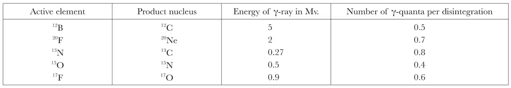

中文
中文H. A. Bethe et al.
Editor’s Note
Enrico Fermi had recently proposed a theory for radioactive beta decay. As Hans Bethe and colleagues point out here, the theory disagrees with experimental data by predicting, for example, too few electrons emerging at low energies. An alternative theory, while accounting for this feature, introduces other problems. Yet a resolution, the authors suggest, may lie in supposing that Fermi’s theory is correct but that experiments so far have not observed simple radioactive decays but instead mixed together decay processes leading to different nuclear states. Evidence for this idea might be found by scrutinizing the gamma rays emitted during beta decays. 中文
FERMI’S original theory of β-decay1 made a definite prediction as to the energy distribution of the electrons emitted from a β-active element. It was found2 that the experimental distribution curves did not agree in shape with this prediction in the sense that the number of electrons of low energy (relative to the upper limit of the spectrum) was considerably greater in the experimental than in the theoretical curves. A modified theory was then proposed by Konopinski and Uhlenbeck (K.U.)3 which introduced in the distribution curve another factor proportional to the square of the momentum of the emitted neutrino. This theory appeared to agree with the facts. 中文
Further experimental evidence, however, revealed a number of facts which did not fit in well with the modified theory: (1) The shape of the observed energy spectra did not fit the K.U. law near the upper limit, but seemed there to follow the original law of Fermi, although the latter did not fit with any other part of the curve4; if one determined the position of the upper limit by extrapolation from the K.U. law, one obtained values that were difficult to reconcile either with the observed spectrum or with the other data on the energy balance5. (2) The Sargent curves (decay constant against disintegration energy) seemed to agree better with the Fermi theory4. (3) The probability of capturing a K-electron, as compared to that of emitting a positron, was found to be much smaller than the K.U. theory would predict, but in reasonable agreement with the Fermi theory6. (4) An attempt to develop the K.U. theory into a mathematically consistent scheme showed that it was, at any rate, far more complicated than that of Fermi, and no proof has as yet been given that it can be consistently carried further than to the first order of approximation7. 中文
We therefore investigated the view that the original theory of Fermi correctly represents the elementary law; but that the observed spectra, in so far as they belong to “allowed” transitions, do not represent the effect of a single nuclear transformation, but rather a superposition of different spectra belonging to transitions to different levels of the final nucleus. It is then clear that the resulting energy distribution will contain rather more electrons of low energies, compared to the upper limit of the spectrum, than a single Fermi curve. If the nucleus is left in an excited state, it must eventually lose its energy by radiation, and the crucial test for the suggested point of view is the presence of γ-rays of suitable energy and intensity from all those radioactive bodies which have “allowed” transitions and the energy spectra of which are known to be different from the simple Fermi curve. The γ-rays might in some cases be absent because the excited state of the nucleus might be a metastable isomer; but this could not be true for all such elements. The restriction to allowed transitions is necessary because in “forbidden” transitions the shape, even of a single curve, is affected by more complicated factors8. 中文
Interpreting from this point of view the electron spectra of 12B, 20F, 17F, 13N, 15O, as given by Fowler, Delsasso and Lauritsen9, we have estimated the energy and intensity of the γ-radiation to be expected. The results are given in the following table. 中文

No great accuracy is claimed for these results since the curve-fitting is very sensitive to the high-energy ends of the electron spectra, which are not very accurately known, and also because we have assumed that only one excited level is involved, whereas there might be more. 中文
The presence of a γ-ray accompanying the disintegration of 13N was indeed reported by Richardson10, who gave its energy as 0.3 Mv. A γ-radiation from 20F was reported by Burcham and Smith11, and measurements of the energy of this radiation, which are being made by Bower12, indicate a value of about 2.2 Mv. Although γ-radiations of the predicted energies from the other elements of our table have not been reported, it is interesting to notice that an energy level in 17O at 0.83 Mv. is known to exist, since it is excited in a number of other nuclear reactions11,13, and similarly an excited state of 12C at 4.3 Mv. is known13. We are indebted to Mr. P. I. Dee for this discussion of the experimental data. 中文
Finally, we would like to point out that, although one cannot consider the above evidence as convincing confirmation of the point of view we suggest, it is certainly incompatible with the K.U. theory, since the existence of γ-rays shows that the observed curves must be superpositions of at least two simple spectra, whereas their shapes are not such as could be represented as sums of two K.U. curves with endpoints differing by the energy of the γ-rays. 中文
(143, 200-201; 1939)
H. A. Bethe: Physics Department, Cornell University.
F. Hoyle: Emmanuel College, Cambridge.
R. Peierls: University, Birmingham.
References:
1. Fermi, E., Z. Phys., 88, 161 (1934).
2. Kurie, F. N. D., Richardson, J. R., and Paxton, H. C., Phys. Rev., 49, 368(1936).
3. Konopinski, E. J., and Uhlenbeck, G. E., Phys. Rev., 48, 7 (1935).
4. Richardson, H. O. W., Proc. Roy. Soc., A, 161, 456 (1937).
5. Cockcroft, J. D., Proc. Roy. Soc., A, 161, 540 (1937).
6. Walke, H. (in the Press).
7. Fierz, M., Helv. Phys. Acta, 10, 123, (1937).
8. Hoyle, F., Proc. Roy. Soc., A, 166, 249 (1938).
9. Fowler, W. A., Delsasso, L. A., and Lauritsen, C. C., Phys. Rev., 49, 569 (1936).
10. Richardson, J. R., Phys. Rev., 53, 610 (1938).
11. Burcham, W. E., and Smith, C. L., Proc. Roy. Soc., A, 168, 176 (1938).
12. Private communication.
13. Cockcroft, J. D., and Lewis, W. B., Proc. Roy. Soc., A, 154, 261 (1936).